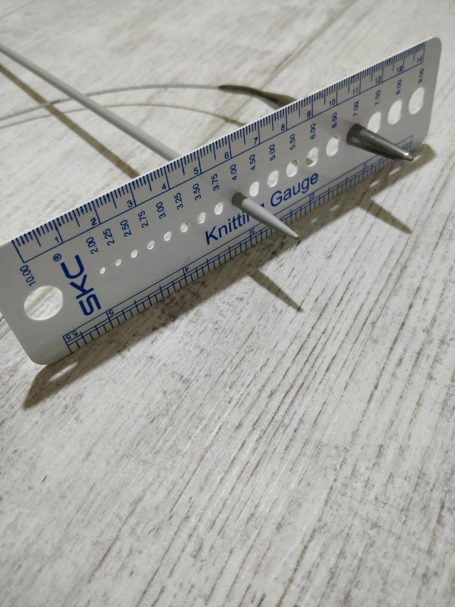

Erken milenyum jenerasyonu, orta sınıf bir ailenin kız çocuğu olarak üniversite yıllarıma kadar kendime ait bir bilgisayardım olmadı. Çünkü teknolojinin cinsiyetleştirildiği bir toplumda tabiki öncelikle oğlan cocuklar bilgisayar edinebilirdi. Ama dayım, komşunun oğlu, ve oğlan arkadaslarım yoluyla o büyülü kara kutuya ulaşma yolundaki patikalar bir bir aşıldı. Sanat eğitimim boyunca resim bolümünde daha çok video ve fotograf üzerine çalışırken, heykel eğitimim sürecinde ise daha çok üç boyutlu (3D) dijital fabrikasyon ve hem geleneksel hemde teknoloji temelli tekstille pratiğimi sürdürdüm. Sanatta Yeterlilik tezimle beraber son dönemlerde ilgim web sanatına doğru yoğunlaştı. Çünkü web zeminsiz bir alanda sonsuz bir boyut sunarak, bugüne kadar pratik ettigim tüm dokunsal ve görsel ifade biçimlerinin ve yöntemlerin hepsini kapsayan bir materyaldir. Bağlayıcı, kapsayıcı, sürdürülebilir, ve ulaşılabilir olması üretimindeki en temel nedenlerdendir.
Bu çalışmanın en basından beri dijital malzemeler ve günümüzün en son teknolojik araçlarıyla pratiğimi sürdürürken, öte yandan dünyanın en eski pratiklerinden birisi olan dokuma, örme üzerine el-işi uygulamalarımda bir navigasyon aracı ve metafor olarak Net'i ele aldım. Net bu bağlamda çift anlam taşımaktadır. Net internete referans olmaktadır. Fakat bunun ötesinde ingilizcede ağ anlamına gelen Net benim çalışmalarımda ağlar ve bağlarla geleneksel kadın sanatına referans el-işi olarak kadın—erkek, güncel—geleneksel, materyal—immetarial dualizmi üzerine dijital ve fiziksel olan arasından perspektif akış—geçiş yaratmayı amaçlamaktadır. Bu perspektif değişimi ise bizi ağlarla tek bir düzlemde bağlayan bir mekanizma olarak spekülatif bir bakışla anti dualistik ve anti hiyerarşik varlıklar arası tümcü bir bakış sunmaktadır. Net bir örümcek ağı gibi bizi birbirimize bağlar.
